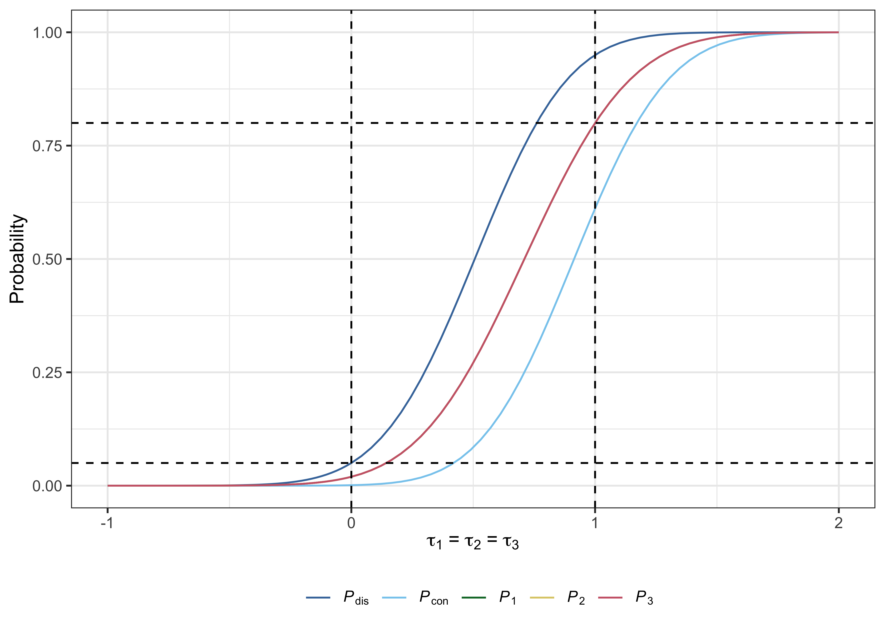
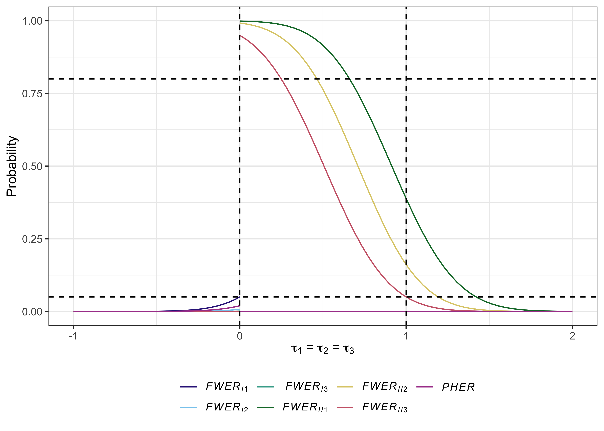

Description
multiarm provides functions to assist with the design of single- and multi-stage multi-arm clinical trials. In either case the available functions allow for sample size determination, trial simulation, analytical operating characteristic calculation, and the production of several informative plots.
Note that an R Shiny graphical user interface is also available for designing single-stage trials; it can be accessed within R using multiarm::gui(), or online at https://mjgrayling.shinyapps.io/multiarm. Additional information on this app can be found in Grayling and Wason (2020).
Getting started
You can install the latest development version of multiarm from Github with:
devtools::install_github("mjg211/multiarm")
An introductory example of how to make use of some of the package’s core functionality can be found below. More detailed support, for single-stage designs, is available in the package vignette, which can be accessed with vignette("single_stage", package = "multiarm"). See also Grayling and Wason (2020). For further help, please email michael.grayling@newcastle.ac.uk.
Details
In total, 46 functions are currently available. Their naming conventions are such that several character strings are joined together, separated by underscores. The first string indicates the purpose of the function (i.e., what type of calculation it performs):
-
build_###_###(): Build multi-arm clinical trial design objects, like those returned by thedes_###_###()functions. For use when a specific design is of interest. -
des_###_###(): Determine the sample size required by a particular type of multi-arm clinical trial design. -
gui(): Provides a graphical user interface to design determination. -
opchar_###_###(): Determine the operating characteristics (power, family-wise error-rates, etc.) of a supplied multi-arm clinical trial design, via multivariate normal integration. -
plot.multiarm_des_###_###(): Produce informative plots (power, false discovery rate curves, etc.) relating to a supplied multi-arm clinical trial design. -
sim_###_###(): Empirically estimate the operating characteristics (power, family-wise error-rates, etc.) of a supplied multi-arm clinical trial design, via simulation.
The second indicates the design:
-
###_dtl_###(): Relate to multi-stage drop-the-losers designs. See, e.g., Wason et al (2017). -
###_gs_###(): Relate to group-sequential multi-arm multi-stage designs. See, e.g., Magirr et al (2012). -
###_ss_###(): Relate to single-stage designs. See, e.g., Grayling and Wason (2020).
The third indicates what type of outcome the function is for:
-
###_###_bern(): Assume a Bernoulli distributed primary outcome. -
###_###_norm(): Assume a normally distributed primary outcome. -
###_###_pois(): Assume a Poisson distributed primary outcome.
Example: Single-stage design for a normally distributed outcome
Typically, a des_###_###() function would be used first to identify a design for the trial parameters of interest. For example, consider designing a single-stage trial for:
- Three experimental treatment arms (see
K). - Desiring a family-wise error-rate of at most 5%, controlling using Dunnett’s correction (see
alphaandcorrection). - Desiring marginal power to reject each null hypothesis of 80% for a clinically relevant difference of 1 (see
beta,delta1, andpower). - Assuming the standard deviation of all responses is 1 (see
sigma). - Allocating patients equally to each arm (see
ratio).
To compute the design, we would run:
des <- des_ss_norm(K = 3, alpha = 0.05, beta = 0.2, delta1 = 1, sigma = rep(1, 4), ratio = rep(1, 3), correction = "dunnett", power = "marginal")
Then, the total required sample size is:
des$N #> [1] 67.42534
In addition, the operating characteristics under the global null, global alternative, and each of the least favourable configurations, can be accessed with:
des$opchar #> # A tibble: 5 x 20 #> tau1 tau2 tau3 Pdis Pcon P1 P2 P3 FWERI1 FWERI2 FWERI3 #> <dbl> <dbl> <dbl> <dbl> <dbl> <dbl> <dbl> <dbl> <dbl> <dbl> <dbl> #> 1 0 0 0 0.0501 0.00109 0.0196 0.0196 0.0196 0.0501 0.00774 0.00109 #> 2 1 1 1 0.950 0.611 0.800 0.800 0.800 0 0 0 #> 3 1 0 0 0.800 0.00330 0.800 0.0196 0.0196 0.0360 0.00330 0 #> 4 0 1 0 0.800 0.00330 0.0196 0.800 0.0196 0.0360 0.00330 0 #> 5 0 0 1 0.800 0.00329 0.0196 0.0196 0.800 0.0360 0.00330 0 #> # … with 9 more variables: FWERII1 <dbl>, FWERII2 <dbl>, FWERII3 <dbl>, #> # PHER <dbl>, FDR <dbl>, pFDR <dbl>, FNDR <dbl>, Sens <dbl>, Spec <dbl>
Useful plots can also be produced with plot.multiarm_des_ss_norm() as follows:
plot(des)


References
Grayling MJ, Wason JMS (2020) A web application for the design of multi-arm clinical trials. BMC Cancer 20:80. DOI: 10.1186/s12885-020-6525-0. PMID: 32005187.
Magirr D, Jaki T, Whitehead J (2012) A generalized Dunnett test for multi-arm multi-stage clinical studies with treatment selection. Biometrika 99(2):494–501. DOI: 10.1093/biomet/ass002.
Wason J, Stallard N, Bowden J, Jennison C (2017) A multi-stage drop-the-losers design for multi-arm clinical trials. Stat Meth Med Res 26(1):508–524. DOI: 10.1177/0962280214550759. PMID: 25228636.